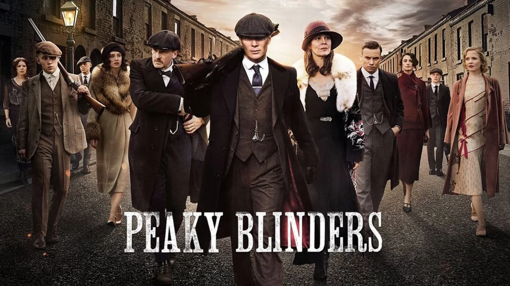

SERIES
Serie Peaky Blinders
postado 10 maio 2024 "Peaky Blinders" é uma série de drama criminal que se passa na Inglaterra pós-Primeira Guerra Mundial, onde acompanhamos a ascensão da família Shelby, liderada por Tommy Shelby, interpretado brilhantemente por Cillian Murphy. Com um estilo visual distintivo, trilha sonora envolvente e uma trama repleta de reviravoltas, a série conquistou uma legião de fãs ao redor do mundo. A série se passa na década de 1920, em Birmingham, uma cidade industrializada do Reino Unido que estava passando por grandes mudanças sociais, políticas e econômicas após a Grande Guerra. Esse cenário turbulento fornece um pano de fundo fascinante para as atividades da família Shelby. Além de Tommy Shelby, a série apresenta uma variedade de personagens complexos e multifacetados, incluindo Arthur, o irmão mais velho de Tommy, interpretado por Paul Anderson, e a formidável tia Polly, interpretada por Helen McCrory. Cada personagem possui sua própria jornada e conflitos, adicionando camadas à narrativa. A direção de arte de "Peaky Blinders" é de tirar o fôlego, capturando a atmosfera sombria e elegante da década de 1920. Os figurinos, penteados e cenários são meticulosamente elaborados para criar uma experiência visual imersiva que transporta o espectador para a época. A música desempenha um papel crucial na ambientação da série, com uma trilha sonora que combina perfeitamente com o clima sombrio e tenso. Desde músicas contemporâneas até clássicos do rock, a seleção musical de "Peaky Blinders" é aclamada e contribui para a identidade única da série. Além de sua estética marcante, "Peaky Blinders" também aborda uma variedade de temas relevantes, incluindo poder, corrupção, lealdade e redenção. A complexidade dos personagens e a trama intrincada mantêm os espectadores envolvidos enquanto exploram as nuances morais e éticas do mundo dos negócios ilegais. Em resumo, "Peaky Blinders" é muito mais do que uma simples série de gângsteres. Com sua rica caracterização, atmosfera envolvente e narrativa repleta de reviravoltas, a série cativa e intriga seus espectadores, deixando uma marca duradoura na cultura pop. Se você ainda não assistiu, prepare-se para uma montanha-russa emocional que o manterá à beira do assento a cada episódio.
Leia maisSerie Breaking Bad
postado 10 maio 2024
"Breaking Bad" é uma série de televisão americana que estreou em 2008 e rapidamente se tornou uma das mais aclamadas pela crítica e amadas pelo público. Criada por Vince Gilligan, a série segue a jornada de Walter White, um professor de química que se transforma em um traficante de metanfetamina após ser diagnosticado com câncer terminal. Vamos mergulhar nesse mundo sombrio e complexo e explorar o que faz "Breaking Bad" tão extraordinária. No cerne da série está a jornada de transformação de Walter White, interpretado brilhantemente por Bryan Cranston. De um homem comum a um dos maiores nomes do tráfico de drogas, testemunhamos sua evolução moral e psicológica ao longo das cinco temporadas. A profundidade e complexidade do personagem de Walter White é um dos aspectos mais fascinantes de "Breaking Bad". A dinâmica entre Walter White e Jesse Pinkman, interpretado por Aaron Paul, é uma parte fundamental da série. A relação entre o mestre e seu aprendiz é tumultuada, repleta de conflitos, traições e momentos de conexão genuína. A química entre Cranston e Paul é palpável, elevando cada cena compartilhada entre os dois. "Breaking Bad" é conhecida por sua narrativa tensa e implacável, repleta de reviravoltas emocionantes e momentos de pura adrenalina. A série mantém os espectadores na ponta de suas cadeiras a cada episódio, nunca diminuindo o ritmo e sempre surpreendendo com suas reviravoltas inesperadas. A série apresenta uma galeria de vilões memoráveis, desde o cruel e calculista Gus Fring até o imprevisível e psicótico Tuco Salamanca. Cada antagonista é habilmente desenvolvido e acrescenta camadas adicionais de tensão e complexidade à trama. "Breaking Bad" explora uma variedade de temas profundos, incluindo moralidade, redenção, consequências de nossas escolhas e a fragilidade da vida humana. A série desafia os espectadores a questionar suas próprias noções de certo e errado enquanto acompanham a descida de Walter White ao submundo do crime. Em resumo, "Breaking Bad" é uma obra-prima televisiva que transcende o gênero do drama criminal. Com sua narrativa envolvente, personagens complexos e temas profundos, a série deixou um legado duradouro na cultura pop e continua a ser uma das séries mais reverenciadas de todos os tempos. Se você ainda não assistiu, prepare-se para uma jornada emocional e intensa que o deixará sem fôlego até o último episódio.
Leia mais